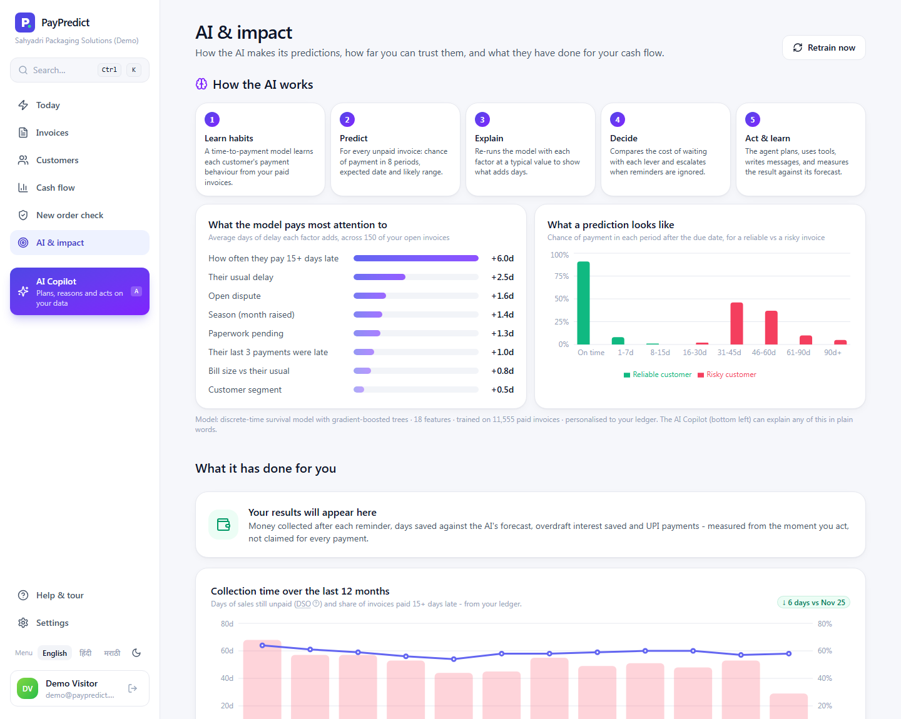

IES MCRC HACKATHON 4.0 · CHALLENGE 3: FINTECH AI - AI FOR SMARTER FINANCIAL DECISIONS
An AI credit manager for Indian MSMEs.
It predicts when every unpaid invoice will really be paid, explains why, decides the cheapest action that works, and reasons through your questions step by step, in English, हिंदी or मराठी.
Time-to-payment survival modelExplainable AICost-based decision engineReAct AI agentEarly-warning detection
Team
Team 4 · [Team name]
Members
Aryan Shukla · [Member 2] · [Member 3]
Programme / Class
[Programme, e.g. PGDM 2025-27]
Live product (one-click demo)
paypredict-ad5f.onrender.com
Source code
github.com/a-zax/paypredict
Submitted
October 2026
★
Executive summary
Five AI components that get an MSME paid faster
Indian micro and small enterprises sell on credit and then wait: payments routinely arrive weeks after the due date, so owners borrow on overdrafts to pay salaries and suppliers. The law protects them (the MSMED Act's 45-day rule and Income-tax Section 43B(h)), but those levers stay unused because chasing customers is manual, awkward and blind.
PayPredict is an AI system, not a reminder tool. From a plain Tally or Excel ledger it learns how each customer really pays, predicts the payment date of every unpaid invoice with a likely range, explains each prediction, chooses the cheapest action that will work, and lets the owner talk to an AI agent that plans, calls tools on their data and shows its reasoning. It is live and working, with a one-click public demo.
AI 1
Predict
Time-to-payment survival model gives each invoice a date and range.
Gradient-boosted hazards
AI 2
Explain
Shows how many days each factor adds, in plain words.
Ablation attribution
AI 3
Decide
Picks the cheapest effective lever; escalates when ignored.
Cost model + adaptive ladder
AI 4
Converse
ReAct agent: understands, plans, uses tools, explains its steps.
payment-date error, vs ±21 days if you trust due dates*
0.90
risk-ranking quality (AUC), vs 0.84 for each customer's own average*
42%
of all late money flagged in the AI's riskiest 20% of invoices*
<1 s
for the agent to plan, call tools and answer, with no external AI service needed
*Honest back-test: trained on 7,925 older invoices, tested on 2,735 newer ones the model never saw (sample business; data disclosed in Section 6).
Why it stands out
It reasons in the open. Every answer and every morning briefing comes with the agent's Thought → Action → Observation trace, and every prediction with its factor breakdown.
It knows Indian finance. It weighs overdraft cost, TReDS discounting, early-payment offers and statutory MSMED interest, and drafts the message (with a UPI pay link) in the customer's language.
It is honest about itself. Accuracy is measured on unseen invoices and shown inside the app; impact is measured against the AI's own forecast, not claimed.
Contents
1Problem statement
7Prototype & model results
2Problem understanding
8Business impact
3Proposed solution
9Feasibility
4Innovation & uniqueness
10Future scope
5Solution architecture
11Conclusion
6AI / technology used
Sources & disclosures
See it live: open paypredict-ad5f.onrender.com and click Try the live demo. A 21-step guided tour explains every screen. The free server sleeps when idle; the first visit can take about 50 seconds.
1
Problem statement
Suppliers can't see which customers will pay late
KEY POINTSmall Indian suppliers find out about late payments too late, chase the wrong invoices, and fund the gap with expensive overdrafts, while the legal levers designed to protect them go unused.
An estimated ₹10.7 lakh crore of MSME receivables were delayed in FY2022 (GAME & FISME, 2022). The law favours the supplier: under the MSMED Act, 2006 a buyer must pay a registered micro or small supplier within the agreed period and never later than 45 days (Sec 15), after which compound interest at three times the RBI bank rate is owed (Sec 16); and since FY2023-24 Section 43B(h) denies the buyer a tax deduction for such dues until paid. Suppliers rarely use these levers because no tool tells them when and how.
2
Problem understanding
Who suffers, how, and why it is a prediction problem
Target users
Owner-managers of micro and small manufacturers, traders and service firms (about ₹1 to 50 Cr turnover) selling B2B on 30 to 60-day credit.
50 to 500 credit customers, one accountant, books in Tally, Busy, Zoho or Excel, WhatsApp as the main channel.
Secondary: their CA, and lenders / TReDS platforms that finance invoices.
Why this needs AI
Each customer's payment behaviour is different, changes over time and depends on context (season, bill size, disputes, how much they already owe). A due date or an ageing report cannot capture that; a model trained on each business's own history can, and keeps updating as invoices age.
Pain point
Why it happens today
Business impact
AI component that fixes it
No early warning
Due dates say nothing about behaviour; ageing reports show only what is already late.
Surprise cash gaps; overdraft at ~11-16% a year.
AI 1 Predict · AI 5 Watch
Wrong invoices chased
Follow-up ordered by age or amount, not risk and money at stake.
Hours of calls with little effect.
AI 1 + AI 3 ranking
One-size reminders
No guidance on discount vs TReDS vs legal reminder.
Too soft (money stays out) or too harsh (relationship damage).
AI 3 Decide
Legal rights unused
MSMED interest is hard to compute; notices hard to draft.
Interest owed by law never claimed.
AI 3 + notice generator
No trust in numbers
Black-box scores; owners can't question them.
Tools ignored.
AI 2 Explain · AI 4 Converse
Credit given blindly
New orders from slow payers accepted on the same terms.
Exposure piles up with the worst payers.
AI 1 order-time check
In the sample business used in this report (a fictional Pune packaging firm, ₹22.6 Cr annual sales), 51% of invoices were paid more than 15 days late and ₹4.25 Cr, about 58 days of sales, was outstanding at any time.
3
Proposed solution
An AI that runs collections in five minutes a day
KEY POINTThe owner uploads a ledger once. From then on the AI does the thinking (predict, explain, decide, warn) and the owner does one tap per customer.
A day with PayPredict
When
What the AI does
What the owner sees and does
Overnight
Re-scores every unpaid invoice (its age changes the forecast), updates customer grades, re-runs 1,000 cash simulations, checks for behaviour changes.
Nothing; it happens automatically.
Morning
The agent investigates (summary → priorities → warnings) and writes an AI briefing.
"You'll likely collect ₹1.75 Cr in 4 weeks, ₹1.38 Cr less than due dates suggest. Do these first … Watch out …"
Action list
Ranks customers by money at stake; for each, picks the cheapest effective lever and explains why.
One card per customer; one tap sends a WhatsApp message (EN / हिंदी / मराठी) with a UPI pay link.
Questions
The AI Copilot understands the question, plans, calls tools on the ledger, and answers with its reasoning trace.
"Should I accept a ₹5 lakh order from Deccan?" → Approve with conditions: 50% advance, because …
Payment
Customer pays by UPI and taps "I've paid"; the AI moves it to "confirm"; ignored reminders escalate automatically.
Confirm in one tap; undo anything.
Over time
Measures days saved against its own forecast; retrains on new payments.
The AI & impact page shows accuracy and results.
Features at a glance
AI briefing & Copilot
Agent-written morning summary; chat in 3 languages with visible Thought / Action / Observation steps, links and follow-ups. Works with no external AI key; uses Claude when one is set.
Explainable predictions
Every invoice: expected date, likely range, chance of payment per period, and a bar chart of the days each factor adds.
AI early warnings
Customers paying much slower than their own habit, unusual overdue from good payers, and concentration risk.
Cash-flow forecast
Expected vs promised cash by week, likely range from 1,000 simulated futures, the tightest week and who holds the cash.
Getting paid
UPI pay links and QR (no gateway fees), MSMED interest computed per invoice, legal notice generator, TReDS suggestions.
New order check
Approve / Conditions / Hold before dispatch, with the advance to ask for and a safe exposure limit.
Built for first-time users: one-click demo, 21-step guided tour, getting-started checklist, Ctrl+K search, plain-English tooltips for terms like TReDS and 43B(h), undo on every action, dark mode and phone layout.
4
Innovation & uniqueness
From reminders to reasoning
Capability
Accounting software reminders
Collection / dunning tools
Credit bureaus
PayPredict
Predicts when each invoice will be paid, with a range
✕
Partial
✕
✓
Explains each prediction factor by factor
✕
✕
Score only
✓
Chooses the cheapest effective action (incl. MSMED, 43B(h), TReDS)
✕
Fixed sequences
✕
✓
Conversational agent that shows its reasoning
✕
✕
✕
✓
Detects behaviour change per customer
✕
✕
Bureau data
✓
Hindi / Marathi messages with UPI pay link
✕
Partial
✕
✓
Based on publicly described feature sets; individual products vary.
PostgreSQL (Neon) stores data and trained models; Docker on Render (Singapore); HTTPS, CSP, HSTS, rate limits.
Optional LLM: when an Anthropic API key is configured, the Copilot uses Claude with the same tools (so numbers still come only from the ledger). Without a key, the on-device agent answers, so the product never depends on an external AI service.
6
AI / technology used
Inside the five AI components
AI 1Time-to-payment (survival) model
Rather than a yes/no "will it be late" classifier, the model learns when an invoice will be paid. Each invoice's life after its due date is split into 8 periods (on time, 1-7, 8-15, 16-30, 31-45, 46-60, 61-90, 90+ days late) and a gradient-boosted classifier learns the hazard: the chance of payment in a period given the invoice is still unpaid at its start.
P(paid in period k) = h(k) × Πj<k (1 − h(j)) → expected date (median), likely range (3rd-97th percentile), P(15+ days late)
Unpaid invoices are used, not dropped (censoring): they add the periods already survived, avoiding optimistic bias.
Updates daily: forecasts are conditioned on each invoice's current age.
No data leakage: features use only payments received before each invoice's date (tested automatically).
18 features, all present in any ledger: usual and recent delay, share paid 15+ days late, worst delay, amount already owed and overdue, days since last payment, relationship length, bill size vs usual, credit terms, month, dispute / paperwork flags, government buyer, TReDS.
Figure 1 · What a prediction looks like
On time1-7d8-15d16-30d31-45d46-60d61-90d90d+
Reliable customer: 91% on timeRisky: 46% at 31-45 days
Real model output: chance of payment in each period after the due date.
AI 2Explainable predictions
For each invoice the model is re-run with one factor at a time reset to a typical value; the change in expected delay is that factor's contribution (ablation attribution). Factors adding two or more days become plain-language reasons ("Usually pays about 27 days late"), and the invoice panel draws them as a bar chart starting from a typical invoice. Averaged over open invoices, the same method gives the model's global importance (Figure 2), which matches business intuition: track record dominates, then disputes, season and paperwork.
Figure 2 · What the model pays most attention to
How often they pay 15+ days late+6.0d
Their usual delay+2.5d
Open dispute+1.6d
Season (month raised)+1.4d
Paperwork pending+1.3d
Last 3 payments were late+1.0d
Bill size vs their usual+0.8d
Average days of delay each factor adds, across 150 open invoices (real model output).
AI 3Cost-based decision engine
For each open invoice the engine compares the cost of waiting with the cost of each lever, using the business's own rates, and applies real-world rules: never chase a disputed invoice for payment first; government buyers get the MSMED reminder but not 43B(h); a "relationship-first" mode prefers a discount for key customers; an adaptive escalation ladder (reminder → incentive → legal reminder → formal notice) climbs when a customer ignores two nudges and starts where a lever has worked before.
waiting cost = amount × overdraft rate × expected days late ÷ 365 TReDS saving = amount × (overdraft − TReDS rate) × days to cash ÷ 365
early-pay offer if waiting cost > amount × 1% MSMED interest = amount × [(1 + 3 × bank rate ÷ 12)months overdue − 1]
AI 4PayPredict Agent: a ReAct agent that shows its work
The Copilot follows the ReAct pattern (reason + act): it alternates short reasoning steps with tool calls and observations until it can answer. Understanding uses an intent model (character n-gram TF-IDF + logistic regression over 13 intents, trained on English, Hinglish, Hindi and Marathi phrasings, robust to typos and mixed scripts) and entity extraction (fuzzy customer-name matching, amounts like "5 lakh", days, invoice numbers, language). A planner maps the intent to one of 13 skills, each a short plan over grounded tools.
Q
Question"Should I accept an order of 5 lakh from Deccan Electricals?"
1
Understandintent model + entities (customer, amount, days, language)
2
Planchoose a skill: credit check → which tools, in what order
3
Actcall tools on the ledger: model scoring, grades, forecast, drafts
4
Observe & reasonread results; decide if another step is needed
↻ repeat 3-4 until it can answer
A
Answergrounded reply + links + follow-ups + the full trace
Figure 3 · Real trace from the live agent
Thought 1 · Understand the question: what is being asked, and about whom? intent_model.classify + extract_entities → Intent: credit check. Entities: customer = Deccan Electricals Ltd, amount = ₹5,00,000
Thought 2 · Score a hypothetical ₹5,00,000 invoice from Deccan Electricals dated today on 30-day credit with the time-to-payment model. credit_check(customer='Deccan Electricals Ltd', amount=500000, credit_days=30) → 87% chance of 15+ days late; exposure after order ₹9.7 L vs safe limit ₹4.1 L; verdict CONDITIONS
Answer: Approve with conditions. 87% chance this order is paid 15+ days late and it would take exposure well past the safe limit, so take an advance with the order or sell the invoice on TReDS once accepted.
The same tools power the morning briefing (5 steps: understand → business summary → rank priorities → detect behaviour changes → compose). With an Anthropic key, Claude drives the same tool loop.
AI 5Early warnings and cash simulation
Behaviour-change detection
Each customer's last three payments are compared with their own long-run habit; large shifts are flagged with the money at stake, alongside unusual overdue from normally good payers and concentration risk. Example from the demo ledger: Tapti Fabricators is paying about 37 days slower than their usual.
Monte-Carlo cash forecast
1,000 simulated futures draw a payment date for every unpaid invoice from its predicted distribution, giving weekly totals with an 80% likely range, the tightest week, and which customers hold the shortfall. The order-time credit check reuses the model on a hypothetical invoice dated today.
Responsible AI
Grounded
Every number in an answer comes from a tool reading the business's own data; nothing is generated from memory.
Transparent
Reasoning traces, factor attributions and back-test accuracy are shown inside the product.
Human in control
No message is sent without the owner; legal notices are templates with a "review with your CA" note.
Data used
Disclosure. No public dataset of Indian MSME invoice payments exists, so the prototype runs on a synthetic ledger of a fictional Pune packaging firm: 12,193 invoices from 220 customers over three years (Oct 2023 to Sep 2026). It encodes documented behaviour: persistent customer habits, slower government buyers, festive-season slow-downs and the March year-end rush, disputes, cash-stress episodes and rare extreme delays. The hidden traits are not given to the model; it must learn them from invoice history, exactly as with a real ledger. With a real business, the same pipeline trains on its own Tally or Excel data.
7
Prototype / model
The AI, live in the product
KEY POINTA fully working product at paypredict-ad5f.onrender.com. Every screenshot is from the running app; every AI output was produced by the models described in Section 6.
Figure 4 · AI briefing and early warnings. The agent's own write-up of the day (cash outlook, what to do first, who is slowing down), with clickable invoices, "Ask a follow-up", and "How the AI worked this out · 5 steps".Figure 5 · AI Copilot reasoning. For "Should I accept an order of 5 lakh from Deccan Electricals?" the agent shows each Thought, the exact tool call and what it observed, then answers with conditions, links and follow-up questions.
Figure 6 · One invoice, explained. Expected date and likely range on a timeline, chance of payment per period, MSMED interest owed, and the factors behind the forecast.

Figure 7 · "How the AI works" page: pipeline, global factor importance and example predictions, inside the product.
Figure 8 · Cash forecast from 1,000 simulations.Figure 9 · Customer grades A-D from real behaviour.Figure 10 · UPI pay page opened from WhatsApp.
Model results (honest back-test)
Trained on 7,925 invoices raised before September 2025; tested on 2,735 later invoices whose outcome is known. Baselines: assuming customers pay on the due date (what most MSMEs do) and each customer's own average delay (a sensible rule of thumb).
Figure 11 · Average error in predicted payment date (days, lower is better)
Assume due date21.4
Customer's average11.7
PayPredict AI9.4
56% smaller error than assuming due dates; 19% smaller than the rule of thumb.
Metric
PayPredict
Baseline
Risk ranking (AUC)
0.90
0.84
Late money in riskiest 20%
42%
34%
Payments inside "likely range"
86%
-
Copilot intents understood
13
-
Automated tests passing
50 / 50
-
8
Business impact
Faster collection is free working capital
For the sample business (₹22.6 Cr annual sales, about ₹6.2 lakh of sales per day, collection time about 58 days), each day by which the AI helps speed up collection releases cash and saves overdraft interest:
Scenario (illustrative)
Cash released
Overdraft interest saved per year (at 14%)
Collection time 5 days faster (58 → 53 days)
≈ ₹31 lakh
≈ ₹4.3 lakh
Collection time 10 days faster (58 → 48 days)
≈ ₹62 lakh
≈ ₹8.7 lakh
Collection time 15 days faster (58 → 43 days)
≈ ₹93 lakh
≈ ₹13.0 lakh
Cash released = daily sales × days saved. Scenarios size the opportunity; they are not measured results.
Better cash planning
Plan on the AI's expected ₹1.75 Cr for the next 4 weeks instead of the ₹3.13 Cr due dates promise.
Statutory money recovered
MSMED Sec 16 interest computed per invoice and claimed in notices; the 43B(h) line gives buyers a tax reason to pay.
Less time, fewer bad debts
Five minutes a day on the right customers; order-time checks stop new credit piling up with slow payers.
Measured, not claimed. The AI & impact page records money collected within 30 days of an action, days saved against the AI's own forecast at the moment of acting, interest saved and UPI payments, so a pilot produces evidence rather than anecdotes.
9
Feasibility
Runs today, on free infrastructure
Implementation requirements
An invoice list with payment dates (any Tally / Zoho / Excel export); ~150 paid invoices across 8 customers trains a business-specific model, otherwise a starter model is used.
No installation; runs on free cloud tiers; the agent needs no paid AI API.
Challenges and mitigations
Data quality: automatic column mapping, Indian date and amount formats, import warnings.
Trust in AI: visible reasoning, factor attributions, back-test inside the app.
Legal sensitivity: templates with CA review note; relationship-first mode.
Privacy (DPDP Act 2023): data isolated per business, deletable; demo data fictional.
Scalability
Stateless API in one container; PostgreSQL with per-business isolation and models stored in the database; scoring 600+ invoices in about a second with one batched update; the agent answers in under a second. Scaling means more containers and a larger database, not re-architecture.
Business model (proposed)
Freemium SaaS: free up to 50 customers, then about ₹499 to ₹1,999 a month by size; referral revenue from TReDS platforms and NBFCs for invoices financed; distribution through CAs and Tally partners.
10
Future scope
From one business's AI to a network
Near term (pilots)
Pilot with 5 to 10 real MSMEs; publish real accuracy and impact.
Direct Tally and Zoho Books sync; no manual uploads.
WhatsApp Business API: automatic sequences, and the agent reading replies like "will pay Friday" into promises.
Voice questions in Hindi and Marathi to the Copilot.
Longer term (the AI moat)
Buyer reputation network: consent-based, anonymised behaviour pooled across MSMEs, so a first invoice to a buyer is already scored.
Learning which message works for which customer (uplift modelling).
GST filing and Account Aggregator signals as early warnings.
Embedded invoice financing; more Indian languages.
11
Conclusion
Know who will pay late. Get paid before it hurts.
PayPredict turns a plain invoice ledger into an AI credit manager. A survival model predicts when each invoice will be paid; an explainability layer says why; a decision engine that understands the Indian levers (MSMED 45-day rule and interest, Section 43B(h), TReDS, MSME Samadhaan) chooses the cheapest action; a ReAct agent answers questions in the owner's language and shows its reasoning; and early-warning detection keeps watch. Everything ends in a one-tap action with a UPI link that lets the customer pay on the spot.
It is a working, deployed product rather than a concept: payment dates predicted with 56% less error than due dates in back-testing, an agent that answers in under a second without any paid AI service, and a built-in way to prove its own impact.
Micro, Small and Medium Enterprises Development Act, 2006: Sec 15 (payment within agreed period, maximum 45 days), Sec 16 (compound interest with monthly rests at three times the RBI bank rate), Secs 17-18 (recovery; reference to the MSE Facilitation Council).
Income-tax Act, 1961, Section 43B(h), inserted by the Finance Act, 2023 (applicable from FY 2023-24).
Reserve Bank of India, Guidelines for Trade Receivables Discounting System (TReDS), 2014; platforms include RXIL, M1xchange and Invoicemart. MSME Samadhaan portal, Ministry of MSME.
GAME (Global Alliance for Mass Entrepreneurship) & FISME, study on delayed payments to MSMEs, 2022 (estimate of ₹10.7 lakh crore delayed).
Yao et al., "ReAct: Synergizing Reasoning and Acting in Language Models", ICLR 2023 (the reasoning-and-acting pattern followed by the agent).
Interest uses an RBI bank rate of 5.75% (editable; confirm the current rate on rbi.org.in). Notices are templates, not legal advice.
All business names, invoices and amounts are synthetic; model results come from back-testing on that ledger and will differ on real data.